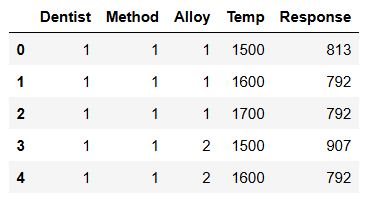
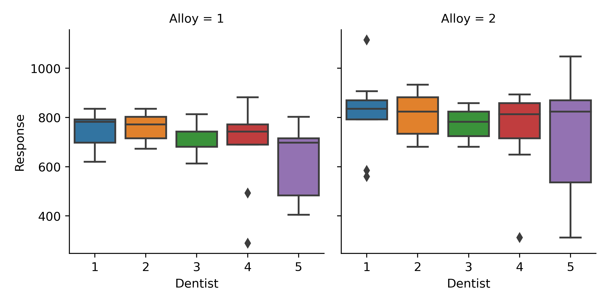

Inferential Statistics Project
A physiotherapist working with a male football team is interested in studying the relationship between foot injuries and the positions played by the athletes. Using the data collected in Table 1, the physiotherapist aims to analyze whether certain positions on the field are more prone to foot injuries than others. By understanding these patterns, the physiotherapist may be able to develop targeted prevention strategies, enhance player safety, and optimize the team’s overall performance.
| Striker | Forward | Attacking Midfielder | Winger | Total | |
|---|---|---|---|---|---|
| Players Injured | 45 | 56 | 24 | 20 | 145 |
| Players Not Injured | 32 | 38 | 11 | 9 | 90 |
| Total | 77 | 94 | 35 | 29 | 235 |
We observe that out of 235 players 145 suffered an injury. So, there is 61.7% chance that a randomly chosen player would suffer an injury.
There are 94 players playing forward and 29 at the winger. So out of 235 players 123 are at the forward or winger. The probability of randomly chosen player being a forward or winger is 52.3%.
There are 45 strikers who have suffered a foot injury. The probability that a randomly chosen player plays in a striker position and has a foot injury is 19.14%.
From the player injured row in table 1 we observe that out of 145 injured players 45 played at striker position. So, the probability that a randomly chosen injured player is a striker is 31%.
The breaking strength of gunny bags used for packaging cement follows a normal distribution, with a mean of 5 kg per square centimeter and a standard deviation of 1.5 kg per square centimeter. To better understand potential wastage or pilferage within the supply chain, the quality team of the cement company is seeking answers to several key questions regarding the packaging material. They want to determine the percentage of gunny bags that have a breaking strength below certain critical thresholds, which could indicate a higher risk of breakage during handling or transport. Additionally, the team is interested in knowing the probability that a randomly selected bag exceeds a specific breaking strength, helping them gauge the robustness of their packaging. By analyzing these aspects, the quality team can make more informed decisions to minimize risks and optimize the supply chain’s efficiency.
11.12% of Gunny bags used for cement packaging have breaking strength less than 3.17. Such bags may pose risk to cement wastage. As shown in Figure 1, the shaded portion shows the part of normal distribution which have breaking strength less than 3.17 which is basically the area under the distribution up to 3.17(cumulative distribution function).
82.47 % of Gunny bags have at least a breaking strength of 3.6. The shaded region in Figure 2 represents gunny bags having breaking strength greater than 3.6.
13 % of Gunny bags have a breaking strength between 5 and 5.5. The shaded strip in Figure 3 depicts the same. We calculated this value by subtracting cumulative distribution function of 5 from 5.5.
Around 13.9 % of gunny bags have a breaking strength not in between 3 and 7.5. The shaded region at two tails of the distribution in Figure 4 depicts the same.
Zingaro Stone Printing is a company specializing in printing images or patterns on both polished and unpolished stones. For optimal printing quality, the stone surface must have a Brinell hardness index of at least 150. Recently, Zingaro received a new batch of polished and unpolished stones from its clients. The company needs to assess these stones to ensure they meet the required hardness standard, ensuring the prints are of the good quality.
The data set provided to us has two columns representing Unpolished and polished stones brinell hardness record. We have total 75 records for each and we did not find any missing or irregular values in the data set. The unpolished stones have a sample mean of 134 with standard deviation of 33 and the polished stones have a sample mean of around 148 with standard deviation of 15. To address the following business questions we will carry out hypothesis testing to get inference from the sample data on the population of manufactured stones.
To answer this question we set up following hypothesis testing.
Null Hypothesis \(H_0\): Mean hardness level of Unpolished stones is 150. \(\mu\) \(\leq\)150.
Alternate Hypothesis - \(H_a\) : \(\mu\) \(>\) 150
We observe in the Figure 5 that hardness distribution of the sample is close to normal. We assume that population distribution is normal. Hardness index is a continuous variable and we do not know the population standard deviation. We therefore carry out one sample t-test for population mean. The p value was found to be 0.999 which is much higher than significance level 0.05. We therefore do not have enough significance to reject the null hypothesis and conclude that mean hardness index of Unpolished stones is less than 150. We can also observe this in the sample distribution plot in Figure 6 box plot. 75% of Unpolished stones have hardness level below 160 and median value is below 140. Zingaro company is justified ih their thought and should take action to improve the hardness index of unpolished stones.
Before setting up a hypothesis testing we can observe from Figure 6 that box plot for Treated and polished stones is positioned a higher on y-axis than box plot for unpolished stones. Graphically we already have a hint that means are not equal. For statistical testing we employed the following null hypothesis.
Null Hypothesis \(H_0\) : means of hardness are equal for the polished and unpolished stones. \(\mu_{polished}\) = \(\mu_{unpolished}\).
Alternate Hypothesis \(H_a\) : \(\mu_{polished}\) \(>\) \(\mu_{unpolished}\).
As the sample standard deviations are different, the population standard deviations may be assumed to be different. The data is continuous and we assume that the populations are normally distributed. We therefore could use two sample T-test for the population mean comparison. The p value from the test statistics is found to be 0.0007 which is much less than level of significance 0.05. We therefore have enough evidence to reject the null hypothesis and conclude that means of hardness are not equal for the polished and unpolished stones. The polished stones have better hardness quality.
R0.35 
The hardness of metal implants in dental cavities depends on multiple factors, including the method of implantation, the temperature at which the metal is treated, and the specific alloy used. Additionally, the preferences and expertise of dentists, who may favor and excel in particular methods, play a significant role. The variable of interest in this context is the response, which refers to the hardness of the metal implants. Understanding how these factors interact can help in optimizing implant procedures and improving patient outcomes. Figure [fig:dataset] show a glimpse of data set used for the statistical analysis. We have four categorical columns Dentist, Method, Alloy and Temp which will be treated as factors/level/treatment variables. The Response column is the outcome or dependent variable. During data cleaning we did not find any null or missing values. We have five Dentist category 1 to 5. Two types of alloys and three types of methods. There are three temperatures settings.
R0.6 
We are interested in effective hardness of implants with respect to different dentist. For this we have put box plots of Response variable with respect to dentist for two alloys in Figure [fig:4.1]. We observe that dentist 5 has higher variability in hardness of implants than other dentists. We are interested in figuring out whether the differences in mean hardness level for different dentist is because of intra-variance or the differences between them. So we need to carry out a statistical test if the mean levels of all these dentist are equal. We can therefore invoke the one way ANOVA F-test here which does the exact task. We do the analysis for both types of Alloy. We did the Shapiro-Wilk’s test to check normality condition and Levene test to check equality of variance on the response variable. For both alloys Normality condition is found to be not valid and equality of variance condition is found to be valid. So the homogenity of variance assumpton is verified using Levene’s test. Even though Shapiro-Wilk’s test is failed we will assume that normality assumption holds and go forward with the test. The hypothesis being set up is as follows:
Null Hypothesis \(H_0\) : means of hardness level in dental implants are equal across the dentist from 1 to 5.
Alternate Hypothesis \(H_a\) : At least one mean value is different for some dentist among 1 to 5.
For alloy 1 we found the p-value to be 0.116 and for alloy 2 it is found to be 0.718. So in both the cases we do not have enough statistical evidence to reject null hypothesis with respect to significance level of 5%. We conclude that mean hardness level is same for all the dentist in both the alloys. We can intuitively see it from the figure [fig:4.1] that all the box plots are more or less on the same level. So, speaking on average it does not matter which dentist performs the dental implant. Nevertheless it is important to note that dentist 5 has higher spread than others and there are outliers in the box plots.
We have put a box plot on Figure 7 of Response variable with respect to method used for implants for both alloy 1 and 2. We observe that Method 1 and Method 2’s box plot are on similar level where as Method 3 seems to differ and is distinctively below. So graphically we have a hint that method used for dental implant has effect on hardness. Method 1 and 2 seem to provide better hardness result than method 3 in both alloys. We need to carry out statistical test to compare the mean levels across different method used. We performed one way ANOVA F-test. We do te analysis for both types of alloy separately. We did the Shapiro-Wilk’s test to check normality condition and Levene test to check equality of variance on the response variable. For both the alloys these assumption test failed. But owing to the importance of ANOVA test we proceed to carry out the test on sample data. The hypothesis being set up is as follows:
Null Hypothesis \(H_0\) : means of hardness level in dental implants are equal across the methods from 1 to 3.
Alternate Hypothesis \(H_a\) : At least one mean value is different for some method among 1 to 3.
The p value from one way F-test is found to be very small compared to significance level of 5% in both alloy types. We therefore in both the cases reject the null hypothesis and conclude that means of hardness level is not same across the method used for implants. To find out which one differ we carried out multiple pairwise comparison test (Turkey HSD). We found that mean for method 3 is different from 1 and 2 in both types of alloys. This agrees with our graphical observation in figure 7. The results from Turkey HSD are shown in Figure [fig:hsd] in both alloys.
We have put an interaction plot on Response variable between method
and dentist in Figure 10.
On the x axis we have three methods and different colored curve is
plotted for all the dentist from 1 to 5. Each point represent mean of
the sample corresponding to the method and dentist combination. The
error bars are omitted for better visibility. We have done the analysis
separately for alloy 1 and 2. In the previous question we had discovered
that method 3 has lower hardness result compared to other methods. this
is also reflected in this interaction plot. For most dentist combination
the mean hardness level for method 3 has lower response value. If higher
hardness level is desired then dentists not performing well in method 3
should consider their options more towards method 1 and 2.
Alloy 1 :
Dentist 4 and 5 have similar performance. Both of them have distinctively low response level for method 3.
The variation across methods for dentist 1,2 and 3 is relatively less.
dentist 1 and 2 performs method 1 better. Dentist 1,2 and 3 perform method 3 very similarly.
Alloy 2:
Alloy 2 has a little bit different story than Alloy 1.
Here for method 3 all the dentist have lower hardness result. Alloy 2 does not seem very conducive for method 3 across all the dentist.
Method 2 is best performed by dentist 1. Dentist 5 have good response on method 1 and 2 but very low on method 3. Dentist 5 should prefer method 1 and 2.
In both alloys dentist 3(green) has least variability across three methods.
For addressing this question we will use two-way ANOVA test. It is used to examine the interaction effect between two independent variables (factors) on a single dependent variable. Here we have two factors Method and Dentist. The dependent variable is Hardness level i.e Response. The following are the hypothesis design for the test.
Hypothesis for main effect of Method factor
Null Hypothesis \(H_0\) : Method used for implant doe not have any effect on Response level.
Alternate \(H_a\) : Method used for implant does have effect on Response level.
Hypothesis for main effect of Dentist factor
Null Hypothesis \(H_0\) : Different dentist get same result on Response level.
Alternate \(H_a\) : Different dentist get variable result on Response level.
Hypothesis for interaction effect
Null Hypothesis \(H_0\) : There is no interaction between Method and Dentist on Response level.
Alternate \(H_a\) : There is an interaction between Method and Dentist on Response level.
Figure [fig:two-way-anova] shows the test result table for two way ANOVA on both typre of alloys. The last column indicates the p-value for the test statistics. We see that p value is 0.0114 and 0.3718 for Dentist factor in alloy 1 and 2 respectively. Which is larger than our accepted significance level of 5%. We therefore fail to reject the null hypothesis for Dentist factor. Therefore, on average different dentist get same result on hardness level. The p value for Method factor in alloy 1 is 0.0002 which very small compared to significance level. In this case null hypothesis is rejected and we conclude that method of implant has efect on hardness level in alloy 1. Similarly, The p value for Method factor in alloy 2 is close to zero, null hypothesis is rejected and we conclude that method of implant has significant effect on hardness level in alloy 2. For the interaction between Method and Dentist factor, we find p value to be 0.0067. We have enough statistical evidence for the null hypothesis for interaction effect in alloy1 to be rejected. With respect to significance level of 5% we conclude that there is interaction between method and dentist on response variable. We also observed this qualitatively in previous question where we discussed the interaction plot in Figure 10. In case of alloy 2 the p value for interaction term is 0.093. Although we do not reject null hypothesis here with respect to significance level of 5%, we can conclude that there is 90.7% chance of interaction effect to be true. So interaction between method and dentist factor in alloy 2 can not be ignored.